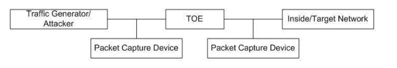
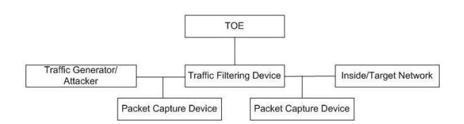

The scope of this PP-Module is to describe the security functionality of an Intrusion Prevention System (IPS) in terms of [CC] and to define functional and assurance requirements for such products. This PP-Module is intended for use with the following Base-PPs:
Network Device collaborative Protection Profile Version 4.0
This Base-PP is valid because a device that implements IPS is a specific type of network device, and there is nothing about the implementation of IPS that would prevent any of the security capabilities defined by the Base-PP from being satisfied.
A TOE that conforms to a PP-Configuration containing this PP-Module may be a ‘Distributed TOE’ as defined in the NDcPP. For example, the TOE could have distributed ‘sensor’ components monitoring various logically separated networks, each of which reports to a centralized ‘manager’ component for configuration of IPS policies and aggregation of IPS data.
1.2 Terms
The following sections list Common Criteria and technology terms used in this document.
1.2.1 Common Criteria Terms
Assurance
Grounds for confidence that a TOE meets the SFRs [CC].
Base Protection Profile (Base-PP)
Protection Profile used as a basis to build a PP-Configuration.
Collaborative Protection Profile (cPP)
A Protection Profile developed by international technical communities and approved by multiple schemes.
Common Criteria (CC)
Common Criteria for Information Technology Security Evaluation (International Standard ISO/IEC 15408).
Common Criteria Testing Laboratory
Within the context of the Common Criteria Evaluation and Validation Scheme (CCEVS), an IT security evaluation facility accredited by the National Voluntary Laboratory Accreditation Program (NVLAP) and approved by the NIAP Validation Body to conduct Common Criteria-based evaluations.
Common Evaluation Methodology (CEM)
Common Evaluation Methodology for Information Technology Security Evaluation.
Distributed TOE
A TOE composed of multiple components operating as a logical whole.
Functional Package (FP)
A document that collects SFRs for a particular protocol, technology, or functionality.
Operational Environment (OE)
Hardware and software that are outside the TOE boundary that support the TOE functionality and security policy.
Protection Profile (PP)
An implementation-independent set of security requirements for a category of products.
The security functionality of the product under evaluation.
TOE Summary Specification (TSS)
A description of how a TOE satisfies the SFRs in an ST.
1.2.2 Technical Terms
Anomaly / Anomalous (network traffic)
Traffic that does not fit into a defined baseline and is therefore unexpected or atypical traffic. Anomalous traffic is not necessarily dangerous, and does not necessarily indicate any threat to the monitored network.
Baseline / Base-lining (network traffic)
Defining what is to be considered expected or typical network traffic on a monitored network. A traffic baseline does not indicate that all traffic that matches the baseline is safe, or that the traffic is not a potential threat to the monitored network. For example: traffic that matches a baseline can still match a list of known-bad IP addresses; or can match signatures of known threats.
Flooding
Causing an excessive amount of traffic on an IP subnet or targeted against a specific IP address.
IPS policy
Any set of rules for traffic analysis, traffic blocking, signature detection, and/or anomaly detection. Many IPS policies could be defined and stored on the TOE, but an IPS policy will not have any affect unless is applied to (made active on) one or more IPS interfaces.
Inline mode
The deployment of the TOE (or TOE component) such that monitored network traffic must flow across the TOE, thus providing the TOE with the opportunity to block the traffic.
Normalization (of network traffic)
Filtering of network traffic such that only the useful packets/fragments are allowed through to the destination. Normalization can only be performed by the TOE when the TOE is deployed in inline mode. Normalization can include filtering out any type of 'known-good' traffic that is expected to be present on the network and therefore not considered to be an indicator of potential intrusion.
The state of an IPS interface in which it is collecting and inspecting network traffic. A promiscuous interface could be one that is only listening and never transmitting traffic, or could be an interface through which traffic flows both inbound and outbound as in an inline mode deployment.
Sensor interface
Any interface of the TOE that has an IPS policy applied to it.
1.3 Compliant Targets of Evaluation
This PP-Module specifically addresses network-based IPSs. A conformant IPS is a product that is connected to one or more distinct networks and is managed as part of an overall enterprise security solution. In particular, a compliant IPS provides network security administrators with the ability to monitor, collect, log, and react in real-time to potentially malicious network traffic. This PP-Module is focused on inspecting IP traffic (TCP, UDP, ICMP, etc.). This limited scope is intentional for a number of reasons including: to define a reasonable boundary for the scope of testing (assurance measures) defined within the PP-Module and to allow future PP-Modules to address other IPS and functionality that includes scanners, analyzers, sensors, etc. The scope of the PP-Module does not preclude support for inspection of other IP protocols (e.g. GRE, ESP, AH), but the scope of this PP-Module does not include the evaluation of non-IP protocols including layer 2 protocols, or Ethernet.
The baseline requirements of this PP-Module are those determined necessary for an Intrusion Prevention product, though conformant TOEs may provide IPS functionality entirely independently from other network components, and/or be deployed to operate in conjunction with other components of a larger enterprise security solution. For example, though all conformant IPSTOEs must have some capacity to monitor, collect, analyze, and react to network traffic, a conformant TOE could:
Monitor all network traffic passively detected by one or more its interfaces, and/or monitor only specific traffic flows that are passed by or through the IPS for inspection.
Transmit IPS data to an external audit storage host, and optionally store IPS data internally. IPS audit data can be pushed (initiated by the TOE) or pulled (initiated by the remote host). Regardless of whether IPS data is pushed or pulled, the transmission must be protected in a manner consistent with protected communications required by FAU_STG.1 of the NDcPP.
Analyze network traffic based on rules that an administrator can configure directly on the TOE, and optionally analyze network traffic based on rules imported/applied from another system.
React independently to potentially malicious traffic (such as by blocking traffic flows, or by transmitting session resets to the endpoints), and optionally react in collaboration with non-TOE components of the overall enterprise security solution by initiating a connection to non-TOE components to cause/configure the non-TOE component to obstruct the traffic flow.
Many similarities exist between a conformant IPSTOE and an Intrusion Detection System (IDS), but there are some important distinctions. The conformant IPSTOE differs from an IDS in that the conformant TOE must be capable of initiating a proactive response to terminate/interrupt an active potential threat, and to initiate a response in real time that would cause interruption of the suspicious traffic flow. It is not sufficient for the TOE to only be able to generate an audit event or other alert when potentially malicious traffic is detected. However, the security administrator may choose to configure the TOE such that such proactive responses are not enabled, and such a configuration would be a valid configuration for the TOE. Though a conformant TOE may be deployed with only its IDS functionalities enabled, the conformant TOE must demonstrate that capability during the evaluation.
Conformant TOEs will detect potentially malicious network traffic using various approaches. Broadly speaking, the traffic analysis could be based on identification of ‘known’ threats, or ‘unknown’ threats. Identification of ‘known’ threats may be performed through pattern matching, e.g. by matching strings of characters within an IP packet, or by matching traffic patterns common with reconnaissance or denial of service (DoS) attacks. Identification of ‘unknown’ threats may be performed through use of various forms of ‘anomaly’ detection whereby the IPS is provided with (or ‘learns/creates’) a definition of ‘expected/typical’ traffic patterns, such that it’s able to detect and react to ‘anomalous’ (unexpected/atypical) traffic patterns.
The TOE may be a distributed TOE in which some SFRs or elements of SFRs are enforced by separate TOE components distributed across an IP network. In such cases, the NDcPP guidance on the handling of distributed TOEs applies. This PP-Module does not mandate that specific SFRs be assigned to specific components in a distributed TOE; however, it is expected that any TOE component that enforces any IPS function must enforce all dependent functionality for management and audit at minimum
Deployment scenarios supported by the TOE include those shown in Figure 1, which includes a number of possible deployments or use cases for IPS functionality within a single network. Note that this is just an example of an IPS deployment where individual devices implement specific IPS functionality differently; per the requirements in this PP-Module (specifically FIP_NTA_EXT.1), a conformant TOE must implement both promiscuous and inline mode interfaces, though it is not a requirement for every TOE component to implement both modes.
IPS 1 is operating in promiscuous mode, capturing data from two separate networks outside the perimeter firewall, and sending traffic filter updates as needed to the perimeter router and perimeter firewall to block unwanted traffic in real-time.
IPS 2 is operating in inline mode, analyzing traffic to and from a wireless network, and blocking in real-time any traffic that violates the admin-defined IPS policies.
IPS 3 is operating in a combination of promiscuous mode and inline mode. The IPS has at least one pair of interfaces creating a bridge or routing across the TOE, and is analyzing and filtering traffic in real-time as traffic traverses the TOE. The same IPS has one or more promiscuous interfaces collecting and analyzing traffic traversing within each separate network, and reacting to anomalous activity, worms, or otherwise unapproved activity.
The physical boundary for a TOE that conforms to this PP-Module is a physical or virtual network device, that also provides generalized network device functionality, such as auditing, I&A, and cryptographic services for network communications. The TOE may be standalone or distributed, where a distributed TOE is one that requires multiple distinct components to operate as a logical whole in order to fulfill the requirements of this PP-Module. The TOE’s logical boundary includes all functionality required by the Base-PP as well as the IPS functionality and related capabilities that are defined in this PP-Module. Any functionality that is provided by the network device that is not relevant to the security requirements defined by this PP-Module or the Base-PP is considered to be outside the scope of the TOE.
1.5 4 Use Cases
This PP-Module defines two potential use cases for the IPSTOE, listed below.
This PP-Module also defines optional and objective requirements for functionality including separation of management roles and ability to use the TSF to review collected IPS data. These functions are not dependent on a particular use case being chosen.
[USE CASE 1] Standalone System
The TOE exists as a standalone device that is capable of enforcing all of the mandatory requirements defined in this PP-Module by itself.
[USE CASE 2] Distributed System
The TOE exists as a distributed system that is able to apply different IPS functions to different network segments. In this case, distributed nodes may each implement all required IPS functionality, or different node types may offer different functions so long as the evaluated configuration collectively addresses all of the mandatory requirements defined in this PP-Module. In this deployment, it is expected (though not required) that a single device be used as a central point to perform configuration and collect relevant log data for the rest of the TOE.
1.6 5 Implementation-Based Features
The following features of the TOE are implementation-based. A TOE is not required to implement these features to conform to this PP-Module, but if the feature is implemented, it is expected that associated implementation-based requirements are claimed as part of the TSF.
1.65.1 Support for Alerting
The TOE implements the capability to alert administrators when a potential security incident has occurred.
If this feature is implemented by the TOE, the following requirements must be claimed in the ST:
This section contains the expectations for the evaluator test environment that is used to perform the test specified by the EAs.
It is assumed the evaluator will have tools suitable to establish sessions, modify or create session packets, and perceive whether packets are getting through the TOE as well as to examine the content of those packets. In general, it is expected that IPS rule configuration and logging capabilities of the TOE can be used to reach appropriate determinations where applicable. The tests need to be repeated for each distinct network interface type capable of monitoring network traffic on all ‘sensor’ interfaces of the TOE, which may include ‘promiscuous’ interfaces (with or without an IP address or IP stack, and whether or not the interfaces are capable of attempting to terminate unapproved traffic flows by transmitting packets such as TCP resets), and inline (pass-through) interfaces with or without an IP address or IP stack, but not management interfaces used to remotely access the TOE, or used by the TOE to initiate outbound connections to syslog servers, AAA servers, remote traffic filtering devices, etc. The evaluators shall minimally create a test environment that is functionally equivalent to the test environment illustrated below. The evaluators must provide justification for any differences in the test environment. The TOE may be a distributed TOE in which some SFRs or elements of SFRs are enforced by separate TOE components distributed across a network. For distributed TOEs:
the “TOE” in the “inline mode test topology” must be the TOE component that controls the flow of traffic, but that TOE component does not need to be the same component that collects or analyzes the traffic;
the “TOE” in the “promiscuous mode test topology” must be the TOE component that communicates with the non-TOE traffic filtering device, but that TOE component does not need to be the same component that collects or analyzes the traffic.
IPS devices that can be deployed in more than one mode, two instantiations of the TOE will more than likely make it easier to conduct testing, however, the evaluator is free to construct a test-bed where one instance of a TOE exists and there is a device that provides the necessary functions to interact with the TOE to satisfy the testing activities.

Figure 2: Sample Inline Mode Test Topology

Figure 3: Sample Promiscuous Mode Test Topology
It is expected that the traffic generator is used to construct network packets and will provide the evaluator with the ability to simulate network attacks. The traffic generator can be a COTS (commercial off the shelf), shareware, or freeware product; special equipment is not necessary.
2 Conformance Claims
Conformance Statement
An ST must claim exact conformance to this PP-Module.
The evaluation methods used for evaluating the TOE are a combination of the workunits defined in [CEM] as well as the Evaluation Activities for ensuring that individual SFRs and SARs have a sufficient level of supporting evidence in the Security Target and guidance documentation and have been sufficiently tested by the laboratory as part of completing ATE_IND.1. Any functional packages this PP claims similarly contain their own Evaluation Activities that are used in this same manner.
CC Conformance Claims
This PP-Module is conformant to Part 2 (extended) and Part 3 (conformant) of Common Criteria CC:2022, Revision 1.
PP Claim
This PP-Module does not claim conformance to any Protection Profile.
Network Device collaborative Protection Profile Version 4.0
collaborative Protection Profile Module for Stateful Traffic Filter Firewalls v2.0
PP-Module for Virtual Private Network (VPN) Gateways, Version 2.0
Package Claim
This PP-Module is not conformant to any Functional or Assurance Packages.
3 Security Problem Definition
The security problem is described in terms of the threats that the TOE is expected to address, assumptions about its operational environment, and any organizational security policies that the TOE is expected to enforce.
IPS devices address a range of security threats related to detection of and reaction to potentially malicious traffic on monitored networks, to which the security policies will be enforced on applicable network traffic. The malicious traffic may pose a threat to one or more endpoints on the monitored networks, to the network infrastructure, or to the TOE itself. The term ‘monitored networks’ is used here to represent any network to which the TOE is directly connected, as well as network segments/subnets that have had their traffic forwarded (redirected or copied) to the IPS for analysis.
The term ‘IPS Data’ will be used throughout this PP-Module and includes any or all of: the data extracted from network traffic and stored on the TOE; the results of analysis performed by the TOE; and messages that indicate the TOE’s reaction to that analysis. This ‘IPS Data’ described in this PP-Module refers to the network traffic collected by the IPS and the resulting audit records related to analysis of that network traffic, all of which is separate from the ‘audit data’ as defined in FAU_GEN from the Base-PP, such as audit records related to authentication of administrators and establishment/termination of trusted channels.
A site is responsible for developing its security policy and configuring a rule set that the IPS will enforce and provide an appropriate response to meet their needs, relative to their own risk analysis and their perceived threats. Threats mitigated by the conformant TOE can include attempts to:
Perform network-based reconnaissance (probing for information about a monitored network or its endpoints), such as through use of various scanning or mapping techniques.
Obstruct the normal function of monitored networks, endpoints, or services, such as through denial of service attacks
Gain inappropriate access to one or more networks, endpoints, or services, such as through brute force password guessing attacks, or by transmitting malicious executable code, scripts, or commands.
Disclose/transmit information in violation of policy, such as sending credit card numbers. Note, relative to the data, it does not matter where the threat agent is located. Example: data exfiltration means that data was removed without proper authorization to remove it. This may be a pull or a push. It can result from intrusion from the outside or by the actions of the insider.
Note that this PP-Module does not repeat the threats identified in the NDcPP, though they all apply given the conformance and hence dependence of this PP-Module on the NDcPP. The NDcPP contains only threats to the ability of the TOE to provide its own functions. This PP-Module defines threats to resources in the operational environment that will be mitigated by an IPSTOE. Together, the threats of the Base-PP and those defined in this PP-Module define the comprehensive set of security threats addressed by an IPSTOE.
3.1 Threats
The following threats defined in this PP-Module extend the threats defined by the Base-PP.
T.NETWORK_ACCESS
Unauthorized access may be achieved to services on a protected network from outside that network, or alternately services outside a protected network from inside the protected network. If malicious external devices are able to communicate with devices on the protected network via a backdoor then those devices may be susceptible to the unauthorized disclosure of information.
T.NETWORK_DISCLOSURE
A malicious actor could gain access to sensitive information on a protected network that was disclosed as a result of ingress- or egress-based actions.
T.NETWORK_DOS
Attacks against services inside a protected network, or indirectly by virtue of access to malicious agents from within a protected network, might lead to denial of services otherwise available within a protected network.
T.NETWORK_MISUSE
Access to services made available by a protected network might be used counter to operational environment policies. Devices located outside the protected network may attempt to conduct inappropriate activities while communicating with allowed public services (e.g. manipulation of resident tools, SQL injection, phishing, forced resets, malicious zip files, disguised executables, privilege escalation tools, and botnets).
T.UNAUTHORIZED_ADMINISTRATION (from NDcPP)
T.UNDETECTED_ACTIVITY (from NDcPP)
3.2 Assumptions
These assumptions are made on the Operational Environment (OE) in order to be able to ensure that the security functionality specified in the PP-Module can be provided by the TOE. If the TOE is placed in an OE that does not meet these assumptions, the TOE may no longer be able to provide all of its security functionality.
All assumptions for the operational environment of the Base-PP also apply to this PP-Module. A.NO_THRU_TRAFFIC_PROTECTION is still operative, but only for the interfaces in the TOE that are defined by the Base-PP and not the PP-Module.
The following additional assumption is made on the operational environment in order to be able to ensure that the security functionality specified in the PP-Module can be provided by the TOE. If the TOE is placed in an operational environment that does not meet this assumption, the TOE may no longer be able to provide all of its security functionality.
A.CONNECTIONS
It is assumed that the TOE is connected to distinct networks in a manner that ensures that the TOE security policies will be enforced on all applicable network traffic flowing among the attached networks.
3.3 Organizational Security Policies
An organization deploying the TOE is expected to satisfy the organizational security policy listed below in addition to all organizational security policies defined by the claimed Base-PP.
P.ANALYZE
Analytical processes and information to derive conclusions about potential intrusions must be applied to IPS data and appropriate response actions taken.
4 Security Objectives
4.1 Security Objectives for the Operational Environment
All objectives for the operational environment of the Base-PP also apply to this PP-Module. OE.NO_THRU_TRAFFIC_PROTECTION is still operative, but only for the interfaces in the TOE that are defined by the Base-PP and not the PP-Module.
This PP-Module defines the following additional environmental security objectives, which extend those defined in the Base-PP.
OE.CONNECTIONS
TOE administrators will ensure that the TOE is installed in a manner that will allow the TOE to effectively enforce its policies on network traffic of monitored networks.
4.2 Security Objectives Rationale
This section describes how the assumptions and organizational security policies map to operational environment security objectives.
The objective supports the assumption by setting the expectation that administrators will deploy the TOE in such a manner that there is no network path that will be exempt from the TOE’s inspection capabilities.
The operational environment's ability to facilitate network connections is necessary for the policy to analyze the network traffic associated with these connections.
5 Security Requirements
This chapter describes the security requirements which have to be fulfilled by the product under evaluation. Those requirements comprise functional components from Part 2 and assurance components from Part 3 of [CC]. The following conventions are used for the completion of operations:
Refinement operation (denoted by bold text or strikethrough text): Is used to add details to a requirement or to remove part of the requirement that is made irrelevant through the completion of another operation, and thus further restricts a requirement.
Selection (denoted by italicized text): Is used to select one or more options provided by the [CC] in stating a requirement.
Assignment operation (denoted by italicized text): Is used to assign a specific value to an unspecified parameter, such as the length of a password. Showing the value in square brackets indicates assignment.
Iteration operation: Is indicated by appending the SFR name with a slash and unique identifier suggesting the purpose of the operation, e.g. "/EXAMPLE1."
5.1 Collaborative Protection Profile for Network Devices Security Functional Requirements Direction
In a PP-Configuration that includes the NDcPP, the TOE is expected to rely on some of the security functions implemented by the network device as a whole and evaluated against the Base-PP. However, this PP-Module does not change how any of the NDcPP functions are implemented so there is no modification to the NDcPP SFRs used with this PP-Module. Note in particular that requirements that apply to distributed TOEs (e.g. FCO_CPC_EXT.1, FPT_ITT.1) remain optional as this PP-Module supports but does not mandate a distributed deployment.
5.1.1 Modified SFRs
This PP-Module does not modify any SFRs defined by the NDcPP.
5.2 TOE Security Functional Requirements
The following section describes the SFRs that must be satisfied by any TOE that claims conformance to this PP-Module. These SFRs must be claimed regardless of which PP-Configuration is used to define the TOE.
5.2.1 Auditable Events for Mandatory SFRs
Table 2: Auditable Events for Mandatory Requirements
Totals of similar events occurring within a specified time period;
Totals of similar reactions occurring within a specified time period;
The events in the Auditable Events for Mandatory SFRs table (Table 2);
[selection: no other auditable events, Auditable events listed in the Auditable Events for Optional SFRs table ( Table 7) for SFRs that are present in the ST, Auditable events listed in the Auditable Events for Objective SFRs table ( Table 8) for SFRs that are present in the ST, Auditable events listed in the Auditable Events for Implementation-dependent SFRs table ( Table 9) for SFRs that are present in the ST]].
Application Note:
This SFR exists in addition to the FAU_GEN.1 SFR in the Base-PP. All required auditable events from the Base-PP still apply. As the data that this SFR addresses is still considered to be “audit data,” the requirement for secure remote transmission per FAU_STG.1 applies to this SFR in the same manner as the Base-PP’s iteration of FAU_GEN.1.
The ST author is not limited to the list presented and should update the list of auditable events with any additional information generated. The ST Author should use FAU_GEN.1 as defined in the Base-PP for standard (non-IPS data) audit functions.
For all requirements marked as optional, it is expected that if the requirement is claimed, the corresponding IPS events should be generated by the TSF; if the requirement is not claimed, then the ST author may also omit these events.
With regards to ‘similar’ and ‘dissimilar’ type events, dissimilar events are those whose characteristics differ from other events by something other than merely a timestamp, whereas ‘similar’ events are multiple occurrences of the same auditable event within some time period where the only significant difference between these events is the timestamp. For example, it is not expected that the TOE generate an individual audit message for every event of the same kind that occurs within a reasonable time period (e.g. the TSF need only generate one audit message for an event that repeated X times during Y seconds).
The TSF shall record within the IPS audit data at least the following information:
Date and time of the event, type of event and/or reaction,subject identity, and the outcome (success or failure) of the event; and;
For each IPS auditable event type, based on the auditable event definitions of the functional components included in the PP, PP-Module, functional package, or ST, [information specified in column three of the Auditable Events for Mandatory SFRs table (Table 2), [selection: no other auditable events, additional information in column three of the Auditable Events for Optional SFRs table ( Table 7) for SFRs that are present in the ST, additional information in column three of the Auditable Events for Objective SFRs table ( Table 8) for SFRs that are present in the ST, additional information in column three of the Auditable Events for Implementation-dependent SFRs table ( Table 9) for SFRs that are present in the ST]].
Application Note:
For FIP_SBD_EXT.1 and FIP_ABD_EXT.1 there may be several circumstances in which it would not be necessary to explicitly identify the action within the audit messages. For example, if the TOE’s action is implied within the policy definition or if the default action is to allow traffic, then the absence of ‘blocked’ would imply the traffic was allowed.
For FIP_SBD_EXT.1, if certain header fields are inspected and dropped or modified by default (e.g., packets with bad checksum, reserved bits set to zero), this logging requirement is not applicable.
The ST author should update IPS Events table below with any additional information generated such as source and destination addresses, IP, signature that triggered event, port, etc.
The evaluator shall verify that the TSS describes how the TOE can be configured to log IPS data associated with applicable policies.
The evaluator shall verify that the TSS describes what (similar) IPS event types the TOE will combine into a single audit record along with the conditions (e.g., thresholds and time periods) for so doing. The TSS shall also describe to what extent (if any) that may be configurable.
For FIP_SBD_EXT.1, for each field, the evaluator shall verify that the TSS describes how the field is inspected and if logging is not applicable, any other mechanism such as counting that is deployed.
Guidance
The evaluator shall verify that the operational guidance describes how to configure the TOE to result in applicable IPS data logging.
Tests
The evaluator shall test that the interfaces used to configure the IPS polices yield expected IPS data in association with the IPS policies. A number of IPS policy combination and ordering scenarios need to be configured and tested by attempting to pass both allowed and anomalous network traffic matching configured IPS policies in order to trigger all required IPS events.
Note the following:
This testing is addressed with a combination of the Test EAs for the other IPS requirements
As part of testing this activity, the evaluator shall also ensure that the audit data the TSF generates to conform to this SFR can be transmitted to an external audit server in the manner that the Base-PP requires for all audit data.
The TSF shall support the definition of [selection: baselines (‘expected and approved’), anomaly (‘unexpected’) traffic patterns] including the specification of [selection:
throughput ( [assignment: data elements (e.g. bytes, packets, etc.) per time period (e.g. minutes, hours, days)])
time of day;
frequency;
thresholds;
[assignment: other methods]
] and the following network protocol fields:
[selection: all packet header and data elements defined in FIP_SBD_EXT.1, [assignment: subset list of packet header and data elements from FIP_SBD_EXT.1]].
Application Note: Baselines are the definition of known-good traffic (to be allowed per FIP_ABD_EXT.1.3) whilst anomaly traffic is definition of (‘offending’) traffic that is to be handled per other actions defined in FIP_ABD_EXT.1.3. Frequency can be defined as a number of occurrences of an event (such as detection of packets matching a signature) over a defined period of time, such as the number of new FTP sessions established during one hour. Thresholds can be defined as an amount or percentage of deviation from expected levels or limits, such as a number of megabytes of data transferred via FTP per hour.
The TSF shall support the definition of anomaly activity through [selection: manual configuration by administrators, automated configuration].
Application Note: The “baseline” and “anomaly” can be something manually defined/configured by a TOE administrator (or importing definitions), or something that the TOE is able to automatically define/create by inspecting network traffic over a period of time (a.k.a. “profiling”). It is not essential for the IPSTOE to have a capability of “profiling” a network to dynamically defining a baseline or rule; if the product has this functionality, it is outside the scope of this PP-Module.
The evaluator shall verify that the TSS describes the composition, construction, and application of baselines or anomaly-based attributes specified in FIP_ABD_EXT.1.1.
If ‘frequency’ is selected in FIP_ABD_EXT.1.1, the TSS shall include an explanation of how frequencies can be defined on the TOE.
If ‘thresholds’ is selected in FIP_ABD_EXT.1.1, the TSS shall include an explanation of how the thresholds can be defined on the TOE.
The evaluator shall verify that each baseline or anomaly-based rule can be associated with a reaction specified in FIP_ABD_EXT.1.3.
The evaluator shall verify that the TSS identifies all interface types capable of applying baseline or anomaly-based rules and explains how they are associated with distinct network interfaces. Where interfaces can be grouped into a common interface type (e.g., where the same internal logical path is used, perhaps where a common device driver is used) they can be treated collectively as a distinct network interface.
Guidance
The evaluator shall verify that the operational guidance provides instructions to manually create baselines or anomaly-based rules according to the selections made in FIP_ABD_EXT.1.1. Note that dynamic “profiling” of a network to establish a baseline is outside the scope of the PP-Module
The evaluator shall verify that the operational guidance provides instructions to associate reactions specified in FIP_ABD_EXT.1.3 with baselines or anomaly-based rules.
The evaluator shall verify that the operational guidance provides instructions to associate the different policies with distinct network interfaces.
Tests
The evaluator shall perform the following tests:
Test FIP_ABD_EXT.1:1: The evaluator shall use the instructions in the operational guidance to configure baselines or anomaly-based rules for each attribute specified in FIP_ABD_EXT.1.1. The evaluator shall send traffic that does not match the baseline or matches the anomaly-based rule and verify the TOE applies the configured reaction. This shall be performed for each attribute in FIP_ABD_EXT.1.1.
Test FIP_ABD_EXT.1:2: The evaluator shall repeat the test above to ensure that baselines or anomaly-based rules can be defined for each distinct network interface type supported by the TOE.
The TSF shall support configuration and implementation of known-good and known-bad lists of [selection: source, destination] IP addresses and [selection: no additional address types, [assignment: list of address types]].
Application Note: The address types defined in this SFR are limited to IP addresses (e.g., a single IP address or a range of IP addresses) because this PP-Module is limited to inspection of IP traffic. IPSTOEs are not prohibited from enabling functionality that would allow/prohibit traffic flow based on other address types, such as MAC addresses.
The TSF shall allow [security administrators] to configure the following IPS policy elements: [selection: known-good list rules, known-bad list rules, IP addresses, [assignment: other IPS policy elements], no other IPS policy elements].
The evaluator shall verify how good/bad lists affect the way in which traffic is analyzed with respect to processing packets. The evaluator shall also very that the TSS provides details for the attributes that create a known good list, a known bad list, and their associated rules, including how to define the source or destination IP address (e.g. a single IP address or a range of IP addresses).
If the TSF uses address types other than a single IP or a range of IP addresses (e.g., MAC addresses), the evaluator shall check that the TSS explains what configurations would cause non-IP lists of known-good and known-bad addresses to take precedence over IP-based address lists.
Guidance
The evaluator shall verify that the administrative guidance provides instructions with how each role specified in the requirement can create, modify and delete the attributes of known-good and known-bad lists.
If the TSF uses address types other than a single IP or a range of IP addresses (e.g., MAC addresses), the evaluator shall check that the operational guidance includes instructions for any configurations that would cause non-IP lists of known-good and known-bad addresses to take precedence over IP-based address lists.
Tests
The evaluator shall perform the following tests:
Test FIP_IPB_EXT.1:1: The evaluator shall use the instructions in the operational guidance to create a known-bad address list. Using a single IP address, a list of addresses, or a range of addresses from that list, the evaluator shall attempt to send traffic through the TOE that would otherwise be allowed by the TOE and observe the TOE automatically drops that traffic.
Test FIP_IPB_EXT.1:2: The evaluator shall use the instructions in the operational guidance to create a known-good address list. Using a single IP address, a list of addresses, or a range of addresses from that list, the evaluator shall attempt to send traffic that would otherwise be denied by the TOE and observe the TOE automatically allowing traffic.
Test FIP_IPB_EXT.1:3: The evaluator shall add conflicting IP addresses to each list and ensure that the TOE handles conflicting traffic in a manner consistent with the precedence in FIP_NTA_EXT.1.1.
The TSF shall perform analysis of IP-based network traffic forwarded to the TOE’s sensor interfaces, and detect violations of administratively-defined IPS policies.
Application Note: Though it might be the case in some TOEs that any TOE interface can be a sensor interface, that capability is not a requirement. This SFR uses the term “sensor interface” to refer to any TOE interface to which one or more IPS policy has been applied. An administratively-defined IPS policy is any set of rules for traffic analysis, traffic blocking, signature detection, and/or anomaly detection applied to one or more TOE interfaces. The TOE may be capable of allowing the administrator to configure the precedence of IPS policy elements (known-good lists, known-bad lists, signature-based rules, and anomaly- based rules), but any such configurability is not required by this PP-Module.
Application Note: The identification of protocol RFCs does not imply that the TOE must ensure all packets are conformant to the identified protocol RFCs at all times, nor does it imply that the TOE would be able to enforce full conformance with the RFCs for any traffic flow at any time. The identification of RFCs provides a frame of reference for understanding the packet contents (headers, fields, states, commands, etc.) identified else in this and other SFRs. The implication is that the TOE must be capable of understanding the RFC implementation to the extent the RFC parameters are identified throughout the SFRs.
The TSF shall allow the signatures to be assigned to sensor interfaces configured for promiscuous mode and to sensor interfaces configured for inline mode, and to support designation of one or more interfaces as being used as a management interface for communication between the TOE and external entities without simultaneously being a sensor interface, as indicated by the following interface types:
Promiscuous (listen-only) mode: [assignment: list of interface types]
Inline (data pass-through) mode: [assignment: list of interface types]
Management mode: [assignment: list of interface types].
Application Note:
Interface types may be Ethernet, Gigabit Ethernet, etc. Promiscuous interfaces are ones that listen to network traffic for the sole purpose of inspecting the traffic, but do not provide any OSI Layer 2, Layer 3, or higher layer functionality, so network services are not listening on the interface, and no IP protocol stack enabled on the interface so no IP address is assigned to the interface. Inline interfaces are interface pairings that provide a path for network traffic to traverse the TOE such that traffic flows can be blocked or modified by the TOE in real-time. Like promiscuous interfaces, inline interfaces typically do not support OSI Layer 3 and higher functionality, though they may provide OSI Layer 2 functionality (with MAC address assigned to the interfaces) to allow adjacent network devices to forward traffic to/through the TOE.
The TOE may support separate interfaces to be used for administration/management purposes that can be configured as OSI Layer 3 interfaces for communication between the TOE and remote entities including all entities defined in FTP_ITC, and FTP_TRP. The TOE may optionally support additional interface types. Session-reset interfaces can be the same as any of the promiscuous, inline, management, or other interfaces, or can be separate interfaces. Session-reset functionality is not mandatory functionality for the TOE, but is a selectable option within the SFR.
As mentioned in the application note for FIP_NTA_EXT.1.1, it’s not necessary for the TOE to have multiple single-purpose interfaces (e.g. “sensor” interface, “management” interface, etc.), though it is expected that the TOE be able to enable specific ports to serve one or more specific interface functions.
The evaluator shall verify that the TSS explains the TOE’s capability of analyzing IP traffic in terms of the TOE’s policy hierarchy (precedence). The TSS should identify if the TOE’s policy hierarchy order is configurable by the administrator for IPS policy elements (known-good lists, known-bad lists, signature-based rules, and anomaly-based rules).
Regardless of whether the precedence is configurable, the evaluator shall verify that the TSS describes the default precedence as well as the IP analyzing functions supported by the TOE.
Guidance
The evaluator shall verify that the guidance describes the default precedence.
If the precedence is configurable, the evaluator shall verify that the guidance explains how to configure the precedence.
The evaluator shall verify that the TSS describes how conformance with the identified protocols has been determined by the TOE developer (e.g., third party interoperability testing, protocol compliance testing).
The evaluator shall verify that the TSS identifies all interface types capable of being deployed in the modes of promiscuous, and or inline mode as well as the interfaces necessary to facilitate each deployment mode (at a minimum, the interfaces need to support inline mode). The evaluator shall also check that the TSS provides a description for how the management interface is logically distinct from any sensor interfaces.
Guidance
The evaluator shall verify that the operational guidance provides instructions on how to deploy each of the deployment methods outlined in the TSS. The evaluator shall also verify that the operational guidance provides instructions of applying IPS policies to interfaces for each deployment mode. If the management interface is configurable, the evaluator shall verify that the operational guidance explains how to configure the interface as a management interface.
The evaluator shall verify that the operational guidance explains how the TOE sends commands to remote traffic filtering devices if this functionality is supported.
Tests
Testing for this element is performed in conjunction with testing where promiscuous and inline interfaces are tested.
The TSF shall support inspection of packet header contents and be able to inspect at least the following header fields:
IPv4: version; header length; packet length; ID; IP flags; fragment offset;time to live (TTL); protocol; header checksum; source address; destination address; IP options; and [selection: type of service (ToS), no other field].
IPv6: version; payload length; next header; hop limit; source address; destination address; routing header; and [selection: traffic class, flow label, no other field]
ICMP: type; code; header checksum; and [selection: ID, sequence number, [assignment: other field in the ICMP header]]
The TSF shall support inspection of packet payload data and be able to inspect at least the following data elements to perform string-based pattern-matching:
ICMPv4 data: characters beyond the first 4 bytes of the ICMP header.
ICMPv6 data: characters beyond the first 4 bytes of the ICMP header.
TCP data (characters beyond the 20 byte TCP header), with support for detection of:
This SFR defines the minimum set of packet header fields, packet payload strings, signature types, and potentially malicious traffic patterns (e.g. flooding and scanning) that the TOE must be able to detect. Valid signatures can be comprised of one, some, or all attributes listed in this SFR, and IPSTOEs may support inspection of additional attributes not listed in this SFR, but only those listed in the SFR will be tested by the evaluators. The set of signature types, traffic patterns, etc. identified in this SFR are not intended to be an exhaustive or completely representative list of malicious activity, nor is it meant to address DDoS attacks – the intent of this SFR is addressing attacks form a single source IP.
Protocol and port scanning refers to reconnaissance attacks that scan target IP addresses for open/listening/responsive services by targeting multiple protocols/ports on one or more target IP address using obvious (sequentially numbered) patterns of target protocol/port numbers or by randomizing the protocol/port numbers and/or randomizing the time delays between transmissions.
It is understood and expected that IPS product vendors will support pre-defined signatures, but inspection of the efficacy of the pre-defined signatures themselves is not objective of this PP-Module. Instead, this PP-Module focuses on the ability of the TOE to perform detailed analysis of network traffic, and those pre-defined signatures may be used during evaluation, the evaluation team is expected to make use of custom-made signatures as well. This set of signature types, traffic patterns, etc. has been selected to: 1) place reasonable boundaries around the scope of testing; and 2) provide a sufficient sampling of packet contents, and traffic patterns to demonstrate the TOE’s ability to inspect packet contents, to collect traffic pattern statistics over a period of time, and to correlate collected data.
An IPS sensor interface refers to any TOE interface to which an IPS policy is currently applied.
The TSF shall allow the following operations to be associated with signature-based IPS policies:
In any mode, for any sensor interface: [selection:
allow the traffic flow;
send a TCP reset to the source address of the offending traffic;
send a TCP reset to the destination address of the offending traffic;
send an ICMP [selection: host, destination, port] unreachable message;
trigger a non-TOE network device to block the offending traffic pattern
]
In inline mode:
block/drop the traffic flow;
and [selection:
allow all traffic flow;
allow the traffic flow with following exceptions: [assignment: malicious traffic such as but not limited to FIP_EXT.1.3 and FIP_EXT.1.4 if always dropped];
modify and forward packets before they pass through the TOE
Application Note: The term “trigger” is used to allow for multiple types of interactions, including: one in which the TOE initiates a authenticated connection to the remote device across an IP network and uses a remote administration interface of the remote device to modify the active configuration on that device; or one in which the connection between the TOE and the non-TOE network device does not traverse an IP network. If the ST author selects “trigger a non-TOE network device…” and the connection between the TOE and the non-TOE network device traverses an IP network, the ST author must ensure that the non- TOE device type is identified within FTP_ITC.1.3 (of the base), and the connection between the TOE and the remote device must be secured in accordance with FTP_ITC.1. In the last bullet of the SFR, “modify and forward packets before they pass through the TOE,” could include such actions as removing from packet data character strings that match regular expression (regex) conditions that violate policies, such as transmitting personally identifiable information or other private data (phone numbers, credit-card numbers, etc.).
The evaluator shall verify that the TSS describes what is comprised within a signature rule.
The evaluator shall verify that each signature can be associated with a reaction specified in FIP_SBD_EXT.1.5.
The evaluator shall verify that the TSS identifies all interface types that are capable of applying signatures and explains how rules are associated with distinct network interfaces. Where interfaces can be grouped into a common interface type (e.g., where the same internal logical path is used, perhaps where a common device driver is used) they can be treated collectively as a distinct network interface.
Guidance
The evaluator shall verify that the operational guidance provides instructions with how to create and/or configure rules using the following protocols and header inspection fields:
IPv4: version; header length; packet length; ID; IP flags; fragment offset; time to live (TTL); protocol; header checksum; source address; destination address; IP options; and, if selected, type of service (ToS).
IPv6: Version; payload length; next header; hop limit; source address; destination address; routing header; and, if selected, traffic class and/or flow label
ICMP: type; code; header checksum; and, if selected, other header fields (varies based on the ICMP type and code).
UDP: source port; destination port; length; and UDP checksum.
The evaluator shall verify that the operational guidance provides instructions with how to select and/or configure reactions specified in FIP_SBD_EXT.1.5 in the signature rules.
Tests
The evaluator shall perform the following tests:
Test FIP_SBD_EXT.1.1:1: The evaluator shall use the instructions in the operational guidance to test that packet header signatures can be created and/or configured with the selected and/or configured reactions specified in FIP_SBD_EXT.1.5 for each of the attributes listed below. Each attribute shall be individually assigned to its own unique signature:
IPv4: version; header length; packet length; ID; IP flags; fragment offset; time to live (TTL); protocol; header checksum; source address; destination address; IP options; and, if selected, type of service (ToS).
IPv6: Version; payload length; next header; hop limit; source address; destination address; routing header; and, if selected, traffic class and/or flow label
ICMP: type; code; header checksum; and, if selected, other header fields (varies based on the ICMP type and code).
UDP: Source port; destination port; length; and UDP checksum.
The evaluator shall generate traffic to trigger a signature and shall then use a packet sniffer to capture traffic that ensures the reactions of each rule are performed as expected.
Test FIP_SBD_EXT.1.1:2: The evaluator shall repeat the test above to ensure that signature-based IPS policies can be defined for each distinct network interface type capable of applying signatures as supported by the TOE.
The evaluator shall verify that the TSS describes what is comprised within a string-based detection signature.
The evaluator shall verify that each packet payload string-based detection signature can be associated with a reaction specified in FIP_SBD_EXT.1.5.
Guidance
The evaluator shall verify that the operational guidance provides instructions with how to configure rules using the packet payload string-based detection fields defined in FIP_SBD_EXT.1.2.
The evaluator shall verify that the operational guidance provides instructions with how to configure reactions specified in FIP_SBD_EXT.1.5 for each string-based detection signature.
The evaluator shall verify that the operational guidance provides instructions with how rules are associated with distinct network interfaces that are capable of being associated with signatures.
Tests
The evaluator shall perform the following tests:
Test FIP_SBD_EXT.1.2:1: The evaluator shall use the instructions in the operational guidance to test that packet payload string-based detection rules can be assigned to the reactions specified in FIP_SBD_EXT.1.5 using the attributes specified in FIP_SBD_EXT.1.2. However it is not required (nor is it feasible) to test all possible strings of protocol data, the evaluator shall ensure that a selection of strings in the requirement is selected to be tested. At a minimum at least one string using each of the following attributes from FIP_SBD_EXT.1.2 should be tested for each protocol. The evaluator shall generate packets that match the string in the rule and observe the corresponding reaction is as configured.
Test at least one string of characters for ICMPv4 data: beyond the first 4 bytes of the ICMP header.
Test at least one string of characters for ICMPv6 data: beyond the first 4 bytes of the ICMP header
TCP data (characters beyond the 20 byte TCP header):
Test at least one FTP (file transfer) command: help, noop, stat, syst, user, abort, acct, allo, appe, cdup, cwd, dele, list, mkd, mode, nlst, pass, pasv, port, pass, quit, rein, rest, retr, rmd, rnfr, rnto, site, smnt, stor, stou, stru, and type.
Test at least one administrator-defined string to match URLs/URIs and webpage content.
Test at least one SMTP (email) state: start state, SMTP commands state, mail header state, mail body state, abort state.
Test at least one string in any additional attribute type defined within the “other types of TCP payload inspection” assignment, if any other types are specified.
Test at least one string of UDP data: characters beyond the first 8 bytes of the UDP header;
Test at least one string for each additional attribute type defined in the “other types of packet payload inspection” assignment, if any other types are specified.
Test FIP_SBD_EXT.1.2:2: The evaluator shall repeat Test 1 above to ensure that signature-based IPS policies can be defined for each distinct network interface type capable of applying signatures as supported by the TOE.
The evaluator shall verify that the TSS describes how the attacks defined in FIP_SBD_EXT.1.3 are processed by the TOE and what reaction is triggered when these attacks are identified.
Guidance
The evaluator shall verify that the operational guidance provides instructions with configuring rules to identify the attacks defined in FIP_SBD_EXT.1.3 as well as the reactions to these attacks as specified in FIP_SBD_EXT.1.5.
Tests
The evaluator shall create and/or configure rules for each attack signature in FIP_SBD_EXT.1.3. For each attack, the TOE should apply its corresponding signature and enable it to each distinct network interface type capable of applying the signatures. The evaluator shall use packet captures to ensure that the attack traffic is detected by the TOE and a reaction specified in FIP_SBD_EXT.1.5 is triggered and stops the attack. Each attack should be performed one after another so as to ensure that its corresponding signature successfully identified and appropriately reacted to a particular attack.
The evaluator shall verify that the TSS describes how the attacks defined in FIP_SBD_EXT.1.4 are processed by the TOE and what reaction is triggered when these attacks are identified.
Guidance
The evaluator shall verify that the operational guidance provides instructions with configuring rules to identify the attacks defined in FIP_SBD_EXT.1.4 as well as the reactions to these attacks as specified in FIP_SBD_EXT.1.5.
Tests
The evaluator shall configure individual signatures for each attack in FIP_SBD_EXT.1.4. For each attack, the TOE should apply its corresponding signature and enable it to each distinct network interface type capable of applying signatures. The evaluator shall use packet captures to ensure that the attack traffic is detected by the TOE and a reaction specified in FIP_SBD_EXT.1.5 is triggered and stops the attack. Each attack should be performed one after another so as to ensure that its corresponding signature successfully identified and appropriately reacted to a particular attack.
The evaluator shall verify that the operational guidance provides configuration instructions, if needed, to detect payload across multiple packets.
Tests
The evaluator shall repeat one of the tests in Test FIP_SBD_EXT.1.2:1 but generate multiple non-fragmented packets that contain the string in the rule defined. The evaluator shall verify that the malicious traffic is still detected when split across multiple non-fragmented packets.
5.2.4 Security Management (FMT)
FMT_SMF.1/IPS Specification of Management Functions (IPS)
The evaluator shall verify that the TSS describes how the IPS data analysis and reactions can be configured.This may be performed in conjunction with the evaluation of FIP_ABD_EXT.1, FIP_IPB_EXT.1, and FIP_SBD_EXT.1.
Guidance
The evaluator shall verify that the operational guidance describes the instructions for each function defined in the SFR, describes how to configure the IPS data analysis and reactions, including how to set any configurable defaults and how to configure each of the applicable analysis pattern matching methods and reaction modes.
Tests
The evaluator shall perform the following tests:
Test FMT_SMF.1/IPS:1: The evaluator shall use the operational guidance to create a signature and enable it on an interface. The evaluator shall then generate traffic that would be successfully triggered by the signature. The evaluator should observe the TOE applying the corresponding reaction in the signature.
Test FMT_SMF.1/IPS:2: The evaluator shall then disable the signature and attempt to regenerate the same traffic and ensure that the TOE allows the traffic to pass with no reaction.
Test FMT_SMF.1/IPS:3: The evaluator shall use the operational guidance to import signatures and repeat the test conducted in Test 1.
Additionally, for each other claimed management function, the evaluator shall follow the steps listed in the operational guidance for configuration of that function's behavior and verify that configuration has the intended effect (e.g., for modifying the duration of traffic blocking actions, the evaluator could configure this with two separate time values and verify that traffic was blocked for the configured duration in both cases).
Testing for this SFR will generally be performed in conjunction with the test activities for FIP_ABD_EXT.1 and FIP_SBD_EXT.1, as testing various aspects of IPS functionality will necessarily involve this functionality to be configured such that the TSF is in a known state when being tested.
5.3 TOE Security Functional Requirements Rationale
The following rationale provides justification for each SFR for the TOE, showing that the SFRs are suitable to address the specified threats:
This requirement mitigates the threat of network access by defining the network traffic the TSF is able to examine to determine the potential realization of a threat.
This requirement mitigates the threat by allowing for detection of potential malicious network activity that would otherwise be undetected because of its fragmentation across multiple packets.
This requirement mitigates the threat of network disclosure by providing a mechanism to restrict ingress and egress of network traffic by source or destination.
This requirement mitigates the threat of network disclosure by defining the network traffic the TSF is able to examine to determine the potential realization of a threat.
This requirement mitigates the threat of network denial of service by providing a means to detect network traffic signatures that are indicative of attempts to establish insecure or otherwise malformed sessions over a trusted protocol.
This requirement mitigates the threat by allowing for detection of potential malicious network activity that would otherwise be undetected because of its fragmentation across multiple packets.
This requirement mitigates the threat of network denial of service by providing a mechanism to restrict network traffic that originates from a particular source.
This requirement mitigates the threat of network denial of service by defining the network traffic the TSF is able to examine to determine the potential realization of a threat.
This requirement mitigates the threat of network denial of service by providing a means to detect network traffic signatures that are indicative of denial of service attempts.
This requirement mitigates the threat by allowing for detection of potential malicious network activity that would otherwise be undetected because of its fragmentation across multiple packets.
This requirement mitigates the threat of network misuse by providing a mechanism to restrict network traffic that originates from within a protected network and is bound for an untrusted source, which may indicate compromise or misuse of a protected resource.
This requirement mitigates the threat of network misuse by defining the network traffic the TSF is able to examine to determine the potential realization of a threat.
This requirement mitigates the threat by allowing for detection of potential malicious network activity that would otherwise be undetected because of its fragmentation across multiple packets.
This requirement mitigates the threat of undetected actions by generating an alert in response to the detection of suspicious network events, allowing for timely analysis of potential threats.
This requirement mitigates the threat of undetected actions by providing authorized subjects with a means to review stored IPS data for detection of potential threats.
This requirement mitigates the threat of undetected actions by enforcing restrictions on the subjects that can review stored network data so that this is not disclosed to untrusted or potentially malicious subjects.
This requirement mitigates the threat of undetected actions by ensuring that records of stored IPS data cannot be read without authorization or modified by any subject so as not to falsely disclose the history of activity observed on the network.
This requirement mitigates the threat of undetected actions by providing a predictable mechanism for how storage of IPS data is prioritized in the event that insufficient storage is available, allowing for the administrator to have adequate warning of the limitations of the collection process.
This requirement mitigates the threat of undetected actions by implementing a mechanism that allows the TSF to fail closed so that network traffic is not transmitted without inspection in the event that its inspection functionality is unavailable.
This requirement mitigates the threat of undetected actions by generating an alert in response to the detection of suspicious network events, allowing for timely analysis of potential threats.
This requirement mitigates the threat of undetected actions by providing authorized subjects with a means to review stored IPS data for detection of potential threats.
This requirement mitigates the threat of undetected actions by enforcing restrictions on the subjects that can review stored network data so that this is not disclosed to untrusted or potentially malicious subjects.
This requirement mitigates the threat of undetected actions by enforcing network traffic quotas so that network traffic is not transmitted through the TOE without analysis.
6 Consistency Rationale
6.1 Collaborative Protection Profile for Network Devices
6.1.1 Consistency of TOE Type
When this PP-Module is used to extend the NDcPP, the TOE type for the overall TOE is still a network device. The TOE boundary is simply extended to include IPS functionality that is provided by the network device.
6.1.2 Consistency of Security Problem Definition
The threats defined by this PP-Module (see section 3.1) supplement those defined in the NDcPP as follows:
Table 4: Consistency of Security Problem Definition (NDcPP base)
The NDcPP only defines a security problem that relates to network traffic bound to or originating from the TOE. This PP-Module expands the security problem to include a logical interface for network traffic between two non-TOE endpoints that is intercepted (inline) or observed (promiscuous) by the TSF. This is not inconsistent because the PP-Module introduces a new logical interface for this functionality that is beyond the scope of the NDcPP.
The NDcPP only defines a security problem that relates to network traffic bound to or originating from the TOE. This PP-Module expands the security problem to include a logical interface for network traffic between two non-TOE endpoints that is intercepted (inline) or observed (promiscuous) by the TSF. This is not inconsistent because the PP-Module introduces a new logical interface for this functionality that is beyond the scope of the NDcPP.
The NDcPP only defines a security problem that relates to network traffic bound to or originating from the TOE. This PP-Module expands the security problem to include a logical interface for network traffic between two non-TOE endpoints that is intercepted (inline) or observed (promiscuous) by the TSF. This is not inconsistent because the PP-Module introduces a new logical interface for this functionality that is beyond the scope of the NDcPP.
The NDcPP only defines a security problem that relates to network traffic bound to or originating from the TOE. This PP-Module expands the security problem to include a logical interface for network traffic between two non-TOE endpoints that is intercepted (inline) or observed (promiscuous) by the TSF. This is not inconsistent because the PP-Module introduces a new logical interface for this functionality that is beyond the scope of the NDcPP.The NDcPP only defines a security problem that relates to network traffic bound to or originating from the TOE. This PP-Module expands the security problem to include a logical interface for network traffic between two non-TOE endpoints that is intercepted (inline) or observed(promiscuous) by the TSF. This is not inconsistent because the PP-Module introduces a new logical interface for this functionality that is beyond the scope of the NDcPP.
This assumption requires a specific network configuration to ensure that network traffic cannot be routed in a way that allows it to bypass the TOE’s inspection interfaces. This does not interfere with any of the assumptions in the NDcPP because the NDcPP doesn’t make any assumptions about the TOE’s position in a network architecture.
This organizational security policy does not conflict with the NDcPP because it sets expectations for administrative use of the data that is specifically collected by the TOE’s IPS function.
6.1.3 Consistency of OE Objectives
The objectives for the TOE’s operational environment are consistent with the NDcPP based on the following rationale:
Table 5: Consistency of OE Objectives (NDcPP base)
This objective expects the TOE to be deployed in a network architecture that insures that network traffic cannot be routed in a way that allows it to bypass the TOE’s inspection interfaces. This does not interfere with any of the environmental objectives in the NDcPP because the NDcPP doesn’t have any objectives that relate to the TOE’s position in a network architecture.
6.1.4 Consistency of Requirements
This PP-Module identifies several SFRs from the NDcPP that are needed to support IPS functionality. This is considered to be consistent because the functionality provided by the NDcPP is being used for its intended purpose. The rationale for why this does not conflict with the claims defined by the NDcPP are as follows:
The PP-Module iterates an SFR defined in the Base-PP to define additional audit events specific to IPS functionality that the IPS part of the TOE must generate.
The PP-Module iterates an SFR defined in the Base-PP to define additional management functions specific to the IPS functionality that the IPS part of the TOE must generate. Authorizations to perform these functions are based on FMT_SMR.2 defined by the Base-PP.
This SFR applies to secure failure for inline interfaces, which is a type of logical interface that was introduced in this PP-Module and therefore doesn’t interfere with the Base-PP.
This SFR applies to quota enforcement on network interfaces that perform scanning of network traffic for enforcement of IPS requirements. This functionality was introduced in this PP-Module and therefore doesn’t interfere with the Base-PP.
Indication that the audit store is full, and (if configurable) how the TOE is responding (e.g., failing to audit new auditable events, removing old audit events to make space for new events, preventing auditable events from occurring).
The TSF shall [[selection: ignore generation of IPS events that would otherwise be generated, prevent audited IPS events, overwrite the oldest stored IPS data]] if the IPS audit data storage is full.
The TSF shall be able to inspect packets encapsulated through the following means: [selection: GRE, IP-in-IP, IPv4-in-IPv6, MPLS, PPTP, [assignment: other encapsulation methods]].
The TSF shall be able to perform TCP normalization for traffic flows through the TOE when the TOE is deployed in inline mode, and prohibit forwarding of: [selection:
duplicate packets;
changed packets;
out-of-sequence packets;
[selection: [assignment: other packet types that should not be forwarded], no other packets]
The evaluator shall verify that the TSS describes how the TOE is able to inspect traffic inside the encapsulation protocols claimed in the requirement.
Guidance
The evaluator shall examine the operational guidance to determine that it contains instructions for inspecting tunneled packets through the encapsulation methods identified in the requirement.
Tests
The evaluator shall set up the conditions necessary to execute testing from FIP_SBD_EXT.1 except that the traffic to be inspected is encapsulated in one of the tunneling protocols that the TOE is capable of inspecting. The evaluator shall transmit the encapsulated traffic and observe that the TSF is able to inspect it and respond in the configured manner. The evaluator shall repeat this test for each type of encapsulated traffic supported by the TSF.
The evaluator shall verify that the TSS describes how audit records are generated when packets cannot be reassembled after fragmentation. Also, for inline mode, the evaluator shall examine the TSS to ensure packets are dropped.
Test FIP_SBD_EXT.2.2:1: The evaluator shall generate packets that cannot be reassembled after fragmentation; the evaluator shall ensure audit events are generated for all instances of IP normalization.
Test FIP_SBD_EXT.2.2:2: For inline mode: The evaluator shall test for automatic packet rejection for when packets cannot be reassembled after fragmentation. The evaluator shall use packet captures to ensure that the IP traffic is detected by the TOE and packets are dropped.
Test FIP_SBD_EXT.2.2:3: The evaluator shall generate packets that can be reassembled after fragmentation; the evaluator shall ensure audit events are generated for all instances of IP normalization.
The TSF shall preserve a secure state for inline interfaces when the following types of failures occur: [assignment: list of types of failures in the TSF].
Application Note: The intent of this SFR is to allow the ST author to define the types of failures that can occur on the TOE which could result in failure to effectively detect and react to IPS policy violations for traffic traversing inline interface, and to not allow traffic to traverse those interfaces. The first refinement “to be able” is included to allow the TOE administrator to configure the TOE to allow traffic to traverse inline interfaces when the TOE is in a partially of fully failed state, but to provide assurance that the TOE is capable of blocking traffic if it has been configured to do so. The purpose of this SFR, as stated in CC Part 2, is to “ensure that the TOE will always enforce its SFRs in the event of identified categories of failures in the TSF.” Since some of the SFRs require inspection of data, and that inspection cannot occur when a network interface fails, it will not always be true that “all” the SFRs will continue to be enforced in the event of failure of certain components. The intent here is to ensure that if network traffic is not capable of being inspected by the TSF, then it should automatically be treated as untrusted.
The evaluator shall examine the TSS section to determine that the TOE’s implementation of the fail secure functionality is documented. The evaluator shall ensure that the TSS identifies all failures that will result in the TOE preserving a secure state if triggered. The evaluator shall then ensure that the TOE will attain a secure state after inserting each specified failure mode type. The evaluator shall also examine the TSS to determine whether the fail-secure functionality is configurable.
Guidance
There are no operational guidance EAs for this component.
Tests
For each type of failure listed in the assignment, the TOE vendor must provide the evaluator with the means to trigger the failure, and the evaluator shall reproduce each type of failure to ensure that an applied IPS policy remains enforced during the failure. For example, various causes including temporary loss of power could result in a reboot of the TOE. If the active IPS policy at the time of the failure (e.g. reboot) ensured that ICMP echo packets were dropped by the TOE, the evaluator shall confirm that at no point during the shutdown or restart of the TOE is any ICMP echo packet allowed through the TOE (though in this example, it should be understood that there will be a period at which IPS events are not audited while the audit mechanism is pending restart).
A.2 Objective Requirements
A.2.1 Auditable Events for Objective SFRs
Table 8: Auditable Events for Objective Requirements
The TSF shall take [assignment: list of actions] upon detection of potential security violation.
Application Note:
At minimum, the set of potential security violations must include network traffic in excess of maximum quotas. Therefore, when this SFR is included, the ST author must also include FRU_RSA.1.
In CC Part 2, FAU_ARP is intended to depend on FAU_SAA to define a potential violation of the SFRs. FAU_SAA is not included in this IPS EP; FRU_RSA and the various IPS class requirements are used instead to define the “potential security violation” relevant to FAU_ARP, namely that the TOE has detected potential malicious network traffic or has experienced a spike in network traffic that has exceeded its ability to inspect all network traffic which may result in some network traffic being uninspected by the TSF. This SFR should be used to define actions that the IPSTOE can take which may include generating one or more messages that are not part of the audit trail that must be transmitted securely to a remote audit server.
Messaging actions defined by this SFR that are not specifically relevant to FAU_GEN.1/IPS do not need to be encrypted during transit. The primary intent of this functionality is the speed of notification, not the integrity, or confidentiality of the data in transit. In most cases, the audit trail applicable to FAU_STG.1 will be syslog data, and is being protected in transit to help ensure integrity of remotely stored audit data. This SFR is intended to cover transmission of messages related to single events through protocols such as SNMP (traps) and SMTP (email). In TOEs that support securing SNMP traps, SMTP email, or other messaging types within trusted channels (as defined by FTP_ITC.1), the ST author can choose to list these messaging methods within FTP_ITC.1 and/or within this SFR. There are no additional auditable IPS events that need to be included in FAU_GEN.1/IPS.
The evaluator shall verify that the TSS includes a description of the alerts specified in the requirement and the events that may trigger these alerts to be generated. The evaluator shall also verify that the TSS states that audit data cannot be transmitted through the security alarms interface.
Guidance
The evaluator shall verify that the guidance explains how to enable alerts specified in the requirement based on the events that the TSS identifies as potential security violations.
Tests
For each action that can be taken by the TSF upon detection of a potential security violation, the evaluator shall configure the TOE to take that action when a particular event occurs. The evaluator shall then perform some action to trigger the event (e.g. by transmitting network traffic that represents the event to the TOE’s sensor interfaces) and observe that the configured action occurs in response.
The TSF shall provide the IPS audit data in a manner suitable for the user to interpret the information.
Application Note: It is anticipated, but not required, that TOEs would provide a graphical user interface that would allow searching and sorting, and it would be acceptable for such output to group similar events together to ease administrative review of the IPS data. For example, the display might allow grouping of data by event type, or by source IP address, where multiple events that occurred in a time period are displayed on a single line as in the sample table below. Regardless whether such a view is provided, it is expected that the administrator will be able to view the details of individual event occurrences.
Time/Date Event Type Reaction Event total
2013-01-1 10:45:00 Port scan from 10.1.2.3 Blocked all traffic from 10.1.2.3 34
The evaluator shall examine the TSS to verify that it describes the ability of administrators to view IPS data from the IPS events, the format in which this IPS data is displayed, and how an administrator is authorized to view this data.
Guidance
The evaluator shall examine the operational guidance to verify that it provides instructions on how to access and interpret IPS events using the TOE’s management interface.
Tests
The evaluator shall devise tests that demonstrate that IPS data (generated as defined in FAU_GEN.1/IPS) can be interpreted by authorized administrators from the TOE’s management interface.
The evaluator shall examine the TSS to determine that it identifies the users that are permitted to view IPS data (e.g., members of a particular group).
Guidance
The evaluator shall examine the operational guidance to determine what actions are needed to grant or revoke a user’s ability to view IPS data.
Tests
The evaluator shall log on to the TOE as various users to confirm that only those users that are intended to be granted read access to IPS data are able to view it.
The TSF shall provide the ability to apply [filtering and sorting] of IPS audit data based on [filtering parameters: risk rating, time period, source IP address, destination IP address and [selection: [assignment: other filtering parameters], no other filtering parameters] ; and sorting parameters: event ID, event type, time, signature ID, IPS actions performed, and [selection: [assignment: other sorting parameters], no other sorting parameters]].
The evaluator shall verify that the TSS includes a description of how the TOE has the ability to apply filtering and sorting of IPS data using the parameters listed in the requirement.
Guidance
The evaluator shall review the operational guidance to ensure that the guidance itemizes all event types, as well as describes all attributes that are to be selectable in accordance with the requirement, to include those attributes listed in the assignment. The administrative guidance shall also contain instructions on how to set the pre- selection, as well as explain the syntax (if present) for multi-value pre-selection. The administrative guidance shall also identify those audit records that are always recorded, regardless of the selection criteria currently being enforced.
Tests
The evaluator shall perform the following tests:
Test FAU_SAR.3:1: For each attribute listed in the requirement, the evaluator shall devise a test to show that selecting the attribute causes only audit events with that attribute (or those that are always recorded, as identified in the administrative guidance) to be recorded.
Test FAU_SAR.3:2: [conditional]: If the TSF supports specification of more complex audit pre-selection criteria (e.g., multiple attributes, logical expressions using attributes) then the evaluator shall devise tests showing that this capability is correctly implemented. The evaluator shall also, in the test plan, provide a short narrative justifying the set of tests as representative and sufficient to exercise the capability.
A.3 Implementation-dependent Requirements
A.3.1 Auditable Events for Implementation-Dependent SFRs
The TSF shall enforce maximum quotas of the following resources: [resources supporting inspection of network traffic] that [subjects] can use [simultaneously].
Application Note:
This SFR is optional but the behavior specified by FAU_ARP.1 requires this function to be implemented. Therefore, this SFR is implementation-dependent on the condition that it be claimed if FAU_ARP.1 is claimed. If FAU_ARP.1 is not claimed this SFR should also not be claimed because effective enforcement of maximum quotas requires an alert mechanism when quotas are exceeded. Otherwise it is not possible for an administrator to determine whether a lack of potential security violations is caused by an absence of potential malicious activity or by the inability of the TSF to detect such activity due to an inability to process the volume of traffic being received.
Conformant TOEs will impose quotas on exhaustible resources used to support inspection of network traffic that ‘subjects’ (inspected network traffic flows) can use simultaneously. The intent of this requirement is to ensure that the TOE is not deployed in such a way that the flow of data across its sensor interfaces can exceed the amount of traffic that the TOE is capable of inspecting. If the flow (volume/speed) of data to be inspected exceeds the defined quota, the TOE should trigger an alert signifying effect of the exceeded quota. For example, when the TOE is deployed inline, exceeding the quota may result in the TSF dropping (not forwarding) and failing to inspect network traffic; or when the TOE is not deployed inline, exceeding the quota may result in traffic having been forwarded without inspection. In any case, exceeding the maximum quota results in a “potential security violation” relevant to FAU_ARP.1 in that the TSF may have failed to inspect some network traffic.
The evaluator shall examine the TSS to ensure that it identifies all resources controlled through the quota mechanism, and that this list contains those resources used to support traffic inspection. The evaluator shall ensure that the TSS describes how each resource is counted as “used” and how a maximum quota or use is determined, as well as the action taken when the quota is reached.
Guidance
The evaluator shall examine the operational guidance to determine that it contains instructions for establishing quotas (if they are configurable) and that it describes any actions administrators can or should take in response to a quota being reached.
Tests
The evaluator shall follow the operational guidance to configure quotas for the resource (if such a capability is provided). The evaluator then causes the resource quota to be reached, and observes that the action specified in the TSS occurs.
Intrusion prevention involves the TOE’s ability to collect network packets, examine their contents for information that suggests malicious activity, and to perform some action in response such as terminating the connection.
This family defines requirements for detection of anomalous network traffic and how the TSF should respond if an anomaly is detected.
Component Leveling
FIP_ABD_EXT.1, Anomaly-Based IPS Functionality, requires the TSF to detect anomalous network traffic based on some criteria and to define the response that is issued if an anomaly is detected.
Management: FIP_ABD_EXT.1
The following actions could be considered for the management functions in FMT:
The TSF shall support the definition of [selection: baselines (‘expected and approved’), anomaly (‘unexpected’) traffic patterns] including the specification of [selection:
throughput ( [assignment: data elements (e.g. bytes, packets, etc.) per time period (e.g. minutes, hours, days)])
time of day;
frequency;
thresholds;
[assignment: other methods]
] and the following network protocol fields:
[selection: all packet header and data elements defined in FIP_SBD_EXT.1, [assignment: subset list of packet header and data elements from FIP_SBD_EXT.1]].
FIP_ABD_EXT.1.2
The TSF shall support the definition of anomaly activity through [selection: manual configuration by administrators, automated configuration].
FIP_ABD_EXT.1.3
The TSF shall allow the following operations to be associated with anomaly-based IPS policies:
In any mode, for any sensor interface: [selection:
allow the traffic flow
send a TCP reset to the source address of the offending traffic
send a TCP reset to the destination address of the offending traffic
send an ICMP [selection: host, destination, port] unreachable message
trigger a non-TOE network device to block the offending traffic pattern
]
In inline mode:
allow the traffic flow
block/drop the traffic flow
and [selection: modify and forward packets before they pass through the TOE, no other actions].
C.2.1.2 FIP_IPB_EXT IP Blocking
Family Behavior
This family defines requirements for handling of inspected network traffic based on IP address.
Component Leveling
FIP_IPB_EXT.1, IP Blocking, requires the TSF to enforce IPS policies that are based on IP address.
Management: FIP_IPB_EXT.1
The following actions could be considered for the management functions in FMT:
Modification of the known-good and known-bad lists (of IP addresses or address ranges).
Configuration of the known-good and known-bad lists to override signature-based IPS policies.
Audit: FIP_IPB_EXT.1
The following actions should be auditable if FAU_GEN Security audit data generation is included in the PP/ST:
Inspected traffic matches a list of known-good or known-bad addresses applied to an IPS policy.
The TSF shall support configuration and implementation of known-good and known-bad lists of [selection: source, destination] IP addresses and [selection: no additional address types, [assignment: list of address types]].
FIP_IPB_EXT.1.2
The TSF shall allow [assignment: authorized roles] to configure the following IPS policy elements: [selection: known-good list rules, known-bad list rules, IP addresses, [assignment: other IPS policy elements], no other IPS policy elements].
C.2.1.3 FIP_NTA_EXT Network Traffic Analysis
Family Behavior
This family defines the network traffic protocols for which the TOE is capable of analyzing and detecting violations.
Component Leveling
FIP_NTA_EXT.1, Network Traffic Analysis, requires the TSF to be able to inspect traffic for certain network protocols and in certain architectural deployments.
Management: FIP_NTA_EXT.1
The following actions could be considered for the management functions in FMT:
Modification of the parameters that define the network traffic to be collected and analyzed.
Audit: FIP_NTA_EXT.1
The following actions should be auditable if FAU_GEN Security audit data generation is included in the PP/ST:
Modification of which IPS policies are active on a TOE interface.
Enabling/disabling a TOE interface with IPS policies applied.
Modification of which mode(s) is/are active on a TOE interface.
The TSF shall perform analysis of IP-based network traffic forwarded to the TOE’s sensor interfaces, and detect violations of administratively-defined IPS policies.
FIP_NTA_EXT.1.2
The TSF shall process (be capable of inspecting) the following network traffic protocols:
The TSF shall allow the signatures to be assigned to sensor interfaces configured for promiscuous mode and to sensor interfaces configured for inline mode, and to support designation of one or more interfaces as being used as a management interface for communication between the TOE and external entities without simultaneously being a sensor interface, as indicated by the following interface types:
Promiscuous (listen-only) mode: [assignment: list of interface types]
Inline (data pass-through) mode: [assignment: list of interface types]
Management mode: [assignment: list of interface types].
This family defines the network traffic protocols for which the TOE is capable of analyzing and detecting violations.
Component Leveling
FIP_SBD_EXT.1, Signature-Based IPS Functionality, requires the TSF to detect network traffic with certain packet characteristics and take some action when this traffic is detected.
FIP_SBD_EXT.2, Traffic Normalization, requires the TSF to support the inspection of encapsulated or fragmented traffic by normalizing it.
Management: FIP_SBD_EXT.1
The following actions could be considered for the management functions in FMT:
Enabling and disabling signatures applied to sensor interfaces.
The TSF shall support inspection of packet header contents and be able to inspect at least the following header fields:
IPv4: version; header length; packet length; ID; IP flags; fragment offset;time to live (TTL); protocol; header checksum; source address; destination address; IP options; and [selection: type of service (ToS), no other field].
IPv6: version; payload length; next header; hop limit; source address; destination address; routing header; and [selection: traffic class, flow label, no other field]
ICMP: type; code; header checksum; and [selection: ID, sequence number, [assignment: other field in the ICMP header]]
UDP: source port; destination port; length; and UDP checksum.
FIP_SBD_EXT.1.2
The TSF shall support inspection of packet payload data and be able to inspect at least the following data elements to perform string-based pattern-matching:
ICMPv4 data: characters beyond the first 4 bytes of the ICMP header.
ICMPv6 data: characters beyond the first 4 bytes of the ICMP header.
TCP data (characters beyond the 20 byte TCP header), with support for detection of:
The TSF shall allow the following operations to be associated with signature-based IPS policies:
In any mode, for any sensor interface: [selection:
allow the traffic flow;
send a TCP reset to the source address of the offending traffic;
send a TCP reset to the destination address of the offending traffic;
send an ICMP [selection: host, destination, port] unreachable message;
trigger a non-TOE network device to block the offending traffic pattern
]
In inline mode:
block/drop the traffic flow;
and [selection:
allow all traffic flow;
allow the traffic flow with following exceptions: [assignment: malicious traffic such as but not limited to FIP_EXT.1.3 and FIP_EXT.1.4 if always dropped];
modify and forward packets before they pass through the TOE
The TSF shall be able to inspect packets encapsulated through the following means: [selection: GRE, IP-in-IP, IPv4-in-IPv6, MPLS, PPTP, [assignment: other encapsulation methods]].
FIP_SBD_EXT.2.2
The TSF shall be able to perform IP normalization to reassemble fragmented packets for inspection, and: [selection:
For data collected at promiscuous interfaces: generate an alert if the packet cannot be reassembled;
For data collected at inline interfaces: do not forward any packet fragments and generate an alert if the TSF cannot reassemble the entire packet
The TSF shall be able to perform TCP normalization for traffic flows through the TOE when the TOE is deployed in inline mode, and prohibit forwarding of: [selection:
duplicate packets;
changed packets;
out-of-sequence packets;
[selection: [assignment: other packet types that should not be forwarded], no other packets]
The TOE does not require any additional supplementary information to describe its entropy sources beyond the requirements outlined in the Base-PP.
Appendix E - Inherently Satisfied Requirements
This appendix lists requirements that should be considered satisfied by products successfully evaluated against this Protection Profile. However, these requirements are not featured explicitly as SFRs and should not be included in the ST. They are not included as standalone SFRs because it would increase the time, cost, and complexity of evaluation. This approach is permitted by [CC] Part 1, 8.3 Dependencies between components.
This information benefits systems engineering activities which call for inclusion of particular security controls. Evaluation against the Protection Profile provides evidence that these controls are present and have been evaluated.
FAU_ARP.1 has a dependency on FAU_SAA.1. This is because FAU_SAA.1 defines the behavior that the TSF may consider to be a potential security violation while FAU_ARP.1 defines what actions the TSF takes when such behavior is detected. This dependency is implicitly satisfied in this PP-Module because the behavior defined in FRU_RSA.1 and the various IPS class requirements collectively define potential security violation behavior so a separate SFR to enumerate this is redundant.
FAU_GEN.1 has a dependency on FPT_STM.1 The extended SFR FPT_STM_EXT.1 that is defined in the Base-PP provides equivalent functionality to FPT_STM.1 and therefore satisfies this dependency.
Appendix
E - Entropy Documentation and Assessment
The TOE does not require any additional supplementary information to describe its entropy sources beyond the requirements outlined in the Base-PP.
 first
first